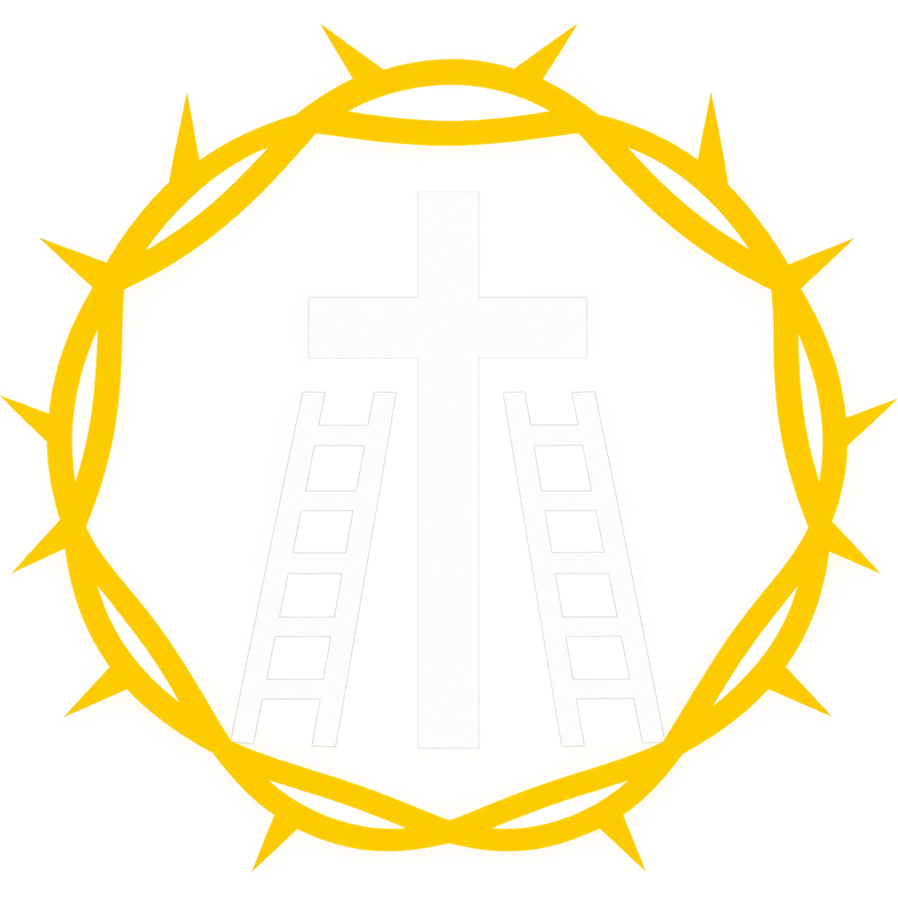

<nav class="navbar px-4 py-2">
  <a id="logo" class="navbar-brand" routerLink="/inicio">
    
    <span class="logo-wordmark">
      <span class="brand-text">COFRADIARIO</span>
      <span class="brand-tagline">Agenda Cofrade de España</span>
    </span>
  </a>

  <button class="menu-toggle d-lg-none" [class.rotate]="menuAbierto" (click)="toggleMenu()">
    <span class="hamburger"></span>
  </button>

  <div class="nav-overlay" *ngIf="menuAbierto" (click)="cerrarMenu()"></div>

  <div id="divNav" class="nav-links hidden-mobile" [class.show]="menuAbierto">
    <a routerLink="/inicio" routerLinkActive="activo" [routerLinkActiveOptions]="{exact: true}" class="nav-item"
      (click)="cerrarMenu()"><i class="bi bi-house-door nav-icon"></i>INICIO</a>
    <span class="nav-sep">✦</span>
    <a class="nav-item" routerLink="/agenda" routerLinkActive="activo" (click)="cerrarMenu()"><i class="bi bi-calendar-event nav-icon"></i>Agenda</a>
    <span class="nav-sep">✦</span>
    <a class="nav-item" routerLink="/calendario" routerLinkActive="activo" (click)="cerrarMenu()"><i class="bi bi-calendar3 nav-icon"></i>Calendario</a>
    <span class="nav-sep">✦</span>
    <a class="nav-item" routerLink="/cofradias" routerLinkActive="activo" (click)="cerrarMenu()"><i class="bi bi-shield nav-icon"></i>Cofradías</a>
    <span class="nav-sep">✦</span>
    <a class="nav-item" routerLink="/contacto" routerLinkActive="activo" (click)="cerrarMenu()"><i class="bi bi-envelope nav-icon"></i>Contacto</a>
    <span class="nav-sep">✦</span>

    <a class="nav-item" href="https://www.diariodelasbandas.es" target="_blank" rel="noopener noreferrer" (click)="cerrarMenu()"><i class="bi bi-box-arrow-up-right nav-icon"></i>DIARIO DE LAS BANDAS</a>
    <ng-container *ngIf="esAdminGestion">
      <span class="nav-sep">✦</span>
      <a class="nav-item" routerLink="/gestion" routerLinkActive="activo" (click)="cerrarMenu()"><i class="bi bi-gear nav-icon"></i>Gestión</a>
    </ng-container>

    <div class="nav-divider-movil"></div>

    <a *ngIf="!usuarioAutenticado" class="btn-acc" routerLink="/login" (click)="cerrarMenu()">
      <i class="bi bi-box-arrow-in-right"></i> Acceder
    </a>

    <ng-container *ngIf="usuarioAutenticado && esCofradia">
      <div class="perfil-dropdown">
        <button type="button" class="nav-item perfil-toggle" (click)="togglePerfil()">
          <i class="bi bi-person-circle"></i> Mi Perfil
          <i class="bi" [ngClass]="perfilAbierto ? 'bi-chevron-up' : 'bi-chevron-down'"></i>
        </button>
        <div class="perfil-menu" *ngIf="perfilAbierto">
          <a class="perfil-menu-item" routerLink="/mi-cofradia" (click)="cerrarMenu()">
            <i class="bi bi-shield"></i> Mi Cofradía
          </a>
          <button type="button" class="perfil-menu-item perfil-menu-item--salir" (click)="cerrarSesion(); cerrarMenu()">
            <i class="bi bi-box-arrow-right"></i> Cerrar Sesión
          </button>
        </div>
      </div>
    </ng-container>

    <button *ngIf="usuarioAutenticado && !esCofradia" class="nav-item logout" (click)="cerrarSesion(); cerrarMenu()">
      <i class="bi bi-box-arrow-right nav-icon"></i>Cerrar sesión
    </button>
  </div>
</nav>

<div class="alerta-perfil" *ngIf="mostrarAlertaPerfil">
  <i class="bi bi-megaphone"></i>
  <span><strong>NUEVO APARTADO "MI COFRADÍA":</strong> rellena tus datos para llegar a más gente.</span>
  <a routerLink="/mi-cofradia" class="alerta-perfil-btn" (click)="cerrarAlertaPerfil()">Rellenar ahora</a>
  <button type="button" class="alerta-perfil-cerrar" (click)="cerrarAlertaPerfil()" title="Cerrar">&times;</button>
</div>